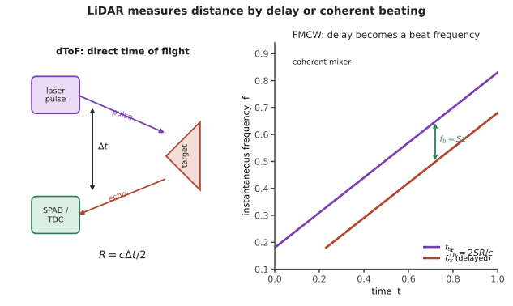

本页目录
应用 III · 光谱传感与 LiDAR
层次：本科接触 + 业界快速增长 ｜ 核对于 2026-07 ｜ 🔗 与自动化站（机器人感知）、生物站（医学成像）互链。 光是最通用的非接触测量工具：不碰到样品就能知道它的成分、形状、距离、速度、温度。本页讲三类主要用途——光谱（测成分）、干涉与结构光（测形状）、LiDAR（测距离与速度）。
学习层：LiDAR 不是“测到回波”这么简单
1. 具体谜题：1 cm 的距离分辨率需要多快的时钟？
dToF 的基本关系是
因此 1 cm 的距离变化对应约 \(67\,\mathrm{ps}\) 的往返时间变化。对 100 m 目标，回波往返时间却约为 \(0.667\,\mu\mathrm{s}\)。另一条 FMCW 链路若调频斜率 \(S=10^{14}\,\mathrm{Hz/s}\)，100 m 回波拍频约为 \(66.7\,\mathrm{MHz}\)；若目标速度为 10 m/s，1550 nm 处多普勒频移约为 \(12.9\,\mathrm{MHz}\)。你先猜：哪一种更依赖皮秒计时，哪一种更依赖线性调频和频谱分离？
2. 先预测：先认观测量，再选择算法
- dToF 的时间抖动 \(67\,\mathrm{ps}\) 会对应多少厘米级距离噪声？
- FMCW 把距离变成 \(f_b=S\tau\) 后，增大斜率会让拍频如何变化？
- 非相干太阳光为什么不能像本振那样稳定地产生 FMCW 拍频？多径和两个相近目标又会破坏哪一个假设？
3. 最小模型：时间门与相干拍频是两种不同的证据
dToF 使用脉冲与回波的时间差，距离不确定度近似为
FMCW 的延迟 \(\tau=2R/c\) 与线性扫频斜率结合为
频谱中同时存在距离拍频与多普勒偏移；相干接收只保留与本振相关的分量，因此能抑制大量非相干背景。这个优势以高相干、低非线性调频、采样带宽和信号处理复杂度为代价。
4. 实验：先押注测距误差，再看时间线或频谱
选择 dToF 或 FMCW，先回答对应的三道预测题；核对后再拖动目标距离、计时抖动、调频斜率和速度。SVG 在 dToF 模式画脉冲—回波时间线，在 FMCW 模式画距离拍频与多普勒位置，并给出厘米误差换算。
无 JavaScript 时的静态读法：默认目标距离 \(R=100\,\mathrm m\)。dToF 取时间抖动 \(\sigma_t=67\,\mathrm{ps}\)；FMCW 取 \(S=10^{14}\,\mathrm{Hz/s}\)、\(v=10\,\mathrm{m/s}\)、\(\lambda=1550\,\mathrm{nm}\)。
| 路线 | 观测量 | 默认结果 | 直接边界 |
|---|---|---|---|
| dToF | \(\sigma_R=c\sigma_t/2\) | \(1.0\,\mathrm{cm}\) | 脉冲宽度、多径、背景光与 TDC 抖动 |
| dToF | \(2R/c\) | \(0.667\,\mu\mathrm{s}\) | 近目标需时间门与分辨率足够 |
| FMCW | \(f_b=2SR/c\) | \(66.7\,\mathrm{MHz}\) | 调频线性、带宽与混叠 |
| FMCW | \(f_D=2v/\lambda\) | \(12.9\,\mathrm{MHz}\) | 需将距离与速度频率分离 |
5. 失败边界：相干不等于自动正确
- dToF 的时间峰可能来自多径、多个目标或其他 LiDAR；时间门只能抑制部分背景，不能替代场景建模。
- FMCW 的拍频依赖扫频线性和本振稳定性；有限带宽、速度范围和距离—速度耦合会带来歧义。
- 结构光、OCT、FBG 与 LiDAR 的“分辨率”对应不同观测量，不能把厘米级时间测距的数字直接迁移到纳米级干涉形貌。
6. 迁移任务：为一项感知任务写测量链
为车载远距测距、室内机器人避障和桥梁光纤监测各选一种主传感机制，列出光源、探测器、关键观测量、主要干扰与校准方法。特别说明什么时候应选 FMCW 的速度信息，什么时候 dToF 的简单与成熟更重要。

一、光谱：用颜色识别物质
原理：每种物质有特征的吸收/发射/散射谱——光谱是分子的指纹。
主要技术：
| 方法 | 原理 | 用途 |
|---|---|---|
| 吸收光谱 | 特定波长被吸收（Beer–Lambert 定律） | 气体检测、浓度测量 |
| 荧光 | 吸收后发射更长波长 | 生物标记、显微（🔗 生物站） |
| 拉曼 | 非弹性散射，能量差对应分子振动 | 分子指纹、无需标记；信号极弱 |
| 红外（FTIR） | 分子振动的直接吸收 | 化学分析标准手段 |
分光的两条路线：
- 色散型：光栅（第四页 \(d\sin\theta=m\lambda\)）把不同波长散开到探测器阵列上。简单直观；
- 傅里叶变换型（FTIR）：用迈克尔逊干涉仪扫描光程差，测得干涉图后做傅里叶变换得到光谱（第三、四页）。 优势：所有波长同时测量（多路复用/Fellgett 优势）+ 通光量大（Jacquinot 优势） → 信噪比显著高于色散型，这是中红外光谱仪普遍采用它的原因。
拉曼的困境与对策：拉曼散射截面极小（约 \(10^{-30}\) cm²，比荧光弱几个数量级）。
- 表面增强拉曼（SERS）：金属纳米结构的局域场增强可达数个数量级，甚至实现单分子检测；
- 需要陷波滤波器滤除极强的瑞利散射（第三页薄膜）。
二、光纤传感
光纤本身就是传感器——这是它常被忽略的一面：
- FBG（光纤布拉格光栅）：应变与温度改变光栅周期 → 反射波长漂移。
- 优势：波长编码（不受光强波动影响）、可在一根光纤上串联数十个不同波长的光栅实现准分布式测量、抗电磁干扰、可用于易燃易爆环境；
- 用于桥梁、大坝、飞机结构、油井的健康监测（🔗 机械站：结构健康监测）；
- 分布式传感（DTS/DAS）：利用光纤中的拉曼/布里渊/瑞利后向散射，把整根光纤变成连续的传感器。
- DAS（分布式声波传感）近年发展迅速：可沿数十公里光纤测量振动 → 用于管道泄漏与入侵监测、地震监测、甚至用既有电信光缆监测交通与地震；
- 光纤陀螺（FOG）：萨格纳克效应（第三页），无运动部件、可靠性高（🔗 自动化站惯性导航）。
三、三维形貌测量
| 方法 | 原理 | 特点 |
|---|---|---|
| 激光三角测量 | 投射光点/线，从另一角度观察位移 | 简单、快、近距高精度 |
| 结构光 | 投射已知图案，由变形反演深度 | 手机人脸识别、工业检测；受环境光影响 |
| 立体视觉 | 双目视差 | 被动、便宜；依赖纹理 |
| 干涉/白光干涉 | 第三页 | 纳米级精度，用于表面形貌与光学检测 |
| 共聚焦 | 只有焦面的光通过针孔 | 层析能力，用于显微与表面测量 |
| OCT | 低相干干涉（第三页） | 深度分辨的断层成像，眼科标准工具（🔗 生物站） |
OCT 值得强调：它是"低相干是资源"这一思想最成功的商业化——只有当参考臂与样品某深度的光程严格匹配时才产生干涉，从而实现微米级深度分辨。已成为眼科检查的标准设备，并扩展到心血管内窥与皮肤科。
四、LiDAR：测距与测速
两条技术路线，物理与性能完全不同：
① dToF（直接飞行时间）：发射短脉冲，测回波时间。
- 1 cm 精度需要约 67 ps 的时间分辨 → 需要 SPAD + 时间数字转换器（TDC）（第九页）；
- 优点：远距离（数百米）、原理简单、抗环境光（可用时间门控）；
- 挑战：太阳背景光、多目标干扰、与其他 LiDAR 的互干扰。
② FMCW（调频连续波）：发射线性调频的连续光，与回波做相干拍频（第九页）。
- 拍频同时给出距离与速度（多普勒）——一次测量得到四维信息（x,y,z,v）；
- 相干探测天然抑制环境光与他车干扰（只有与本振相干的光才产生拍频）——这是它最大的优势；
- 可用低峰值功率（连续波），眼安全性好；
- 挑战：需要高相干、可快速线性调频的激光源（技术门槛高），信号处理复杂。
扫描方式：
- 机械旋转：视场大、成熟，但体积与可靠性受限；
- MEMS 微镜：小型化，扫描角度受限；
- 光学相控阵（OPA）：完全固态、无运动部件，用集成光子学实现（第十五页）。这是最理想的方案，但目前受限于阵列规模、旁瓣与效率【前沿】；
- Flash：一次照亮整个视场，用面阵探测。简单但作用距离受限（能量分散）。
产业判断【核对于 2026-07】：dToF 已大规模量产（车载与手机）；FMCW 与固态 OPA 被视为下一代方向，但成本与成熟度仍是障碍。这是一个技术路线尚未收敛的领域。
五、其他重要传感
- 热成像：非制冷微测辐射热计已普及（第九页）；用于安防、工业巡检、汽车夜视；
- 气体检测：TDLAS（可调谐激光吸收光谱）——利用激光扫过气体的特征吸收线，灵敏度极高，用于甲烷泄漏监测；
- 生物传感：表面等离子体共振（SPR）、硅光微环传感器（结合物后谐振波长漂移，第十五页）；
- 光声成像：光激发产生超声 → 兼具光学的对比度与超声的穿透深度，是很有前景的医学成像方向（🔗 生物站）。
六、要点
- 光谱是分子指纹；FTIR 因多路复用与通光量优势而在中红外占主导；拉曼极弱但可用 SERS 增强；
- FBG 的波长编码不受光强波动影响，可串联组网；DAS 把整根光纤变成传感器；
- OCT 是"低相干作为资源"最成功的商业化；
- dToF 靠时间分辨、FMCW 靠相干拍频——后者同时给出速度且天然抗干扰；
- 光学相控阵是理想的固态扫描方案，但仍受阵列规模与效率限制；
- LiDAR 的技术路线尚未收敛。
线五结束。下一线转向前沿：用亚波长结构重新定义光学元件、用光做计算、以及量子光学正在打开的新可能。